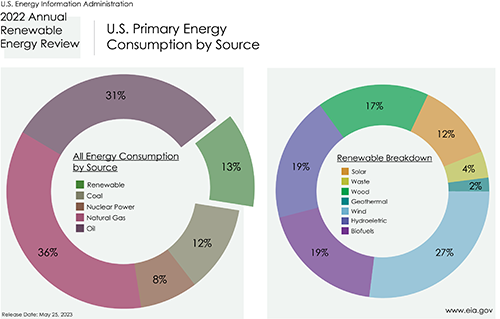

Profile
Here's a quick glance at my most recent projects!
Back to homepageProjects
Here is a glance at some of my recent projects!
Energy Infographics
I designed a group of infographics for a magazine spread, showcasing the use of energy in the United States. Data provided by the U.S. Energy Administration, Annual Energy Review 2022.
Education
Wake Technical Community College - Raleigh
Graphic Design and Advertising - 2025
Certificate of Graphic Design. Degree in progress.